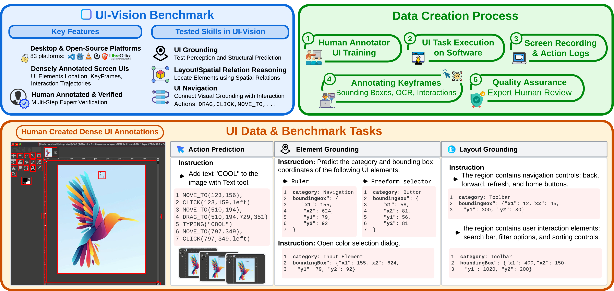
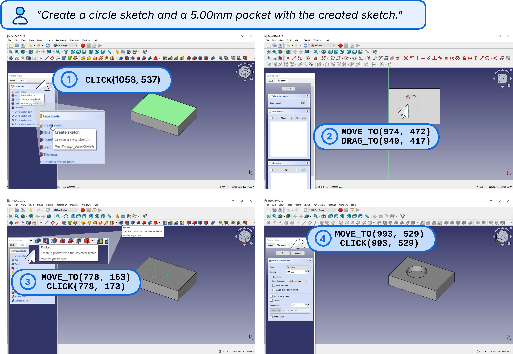

{
"task_description": "Create a circle sketch and a 5.00mm pocket with the created sketch.",
"current_step": "Navigate menus",
"step_index": 2,
"screenshot": "current_frame.png",
"action_history": [
"CLICK(1058, 537)",
"MOVE_TO(974, 472)",
"DRAG_TO(949, 417)"
]
}
UI-Vision
Desktop GUI
83 Apps
Open Source Platform
Core Capabilities
Element Grounding
Layout Analysis
Action Prediction

The Challenge
Limited desktop environment focus
Lack of standardized benchmarks
Complex interface interactions
Our Solution
Expert-verified annotations
Diverse application coverage
Real-world automation tasks
Task Examples
Example Task
$
process_input
--app="freecad"
--input="data.json"
--model="ui-tars-72b"
data.json (Step 2 of N)
1
Draw circle on XY plane
2
Select pocket operation
3
Choose circle as profile
4
Set pocket depth: 5.00mm

Agent Execution: Step-by-step CAD Task Automation
Visual Analysis
[ Required ]
Detect and locate UI elements in interface
State Tracking
[ Required ]
Monitor system state and element changes
Action Planning
[ Required ]
Generate optimal step sequence
Required Capabilities:
[ 1. Element Detection ]
→
[ 2. Action Sequencing ]
→
[ 3. Parameter Accuracy ]
→
[ 4. Task Completion ]
Example Task
$
process_input
--app="chrome"
--input="query.json"
--model="ui-tars-72b"
query.json
{
"task_description": "Find and highlight the main navigation menu in the browser interface",
"current_step": "Element grounding",
"step_index": 1,
"screenshot": "browser_interface.png",
"query": "Locate the main navigation menu"
}

Agent Response: Visual Grounding of UI Elements
Visual Understanding
[ Required ]
Analyze and interpret UI layouts and elements
Element Detection
[ Required ]
Identify and locate specific UI components
Spatial Reasoning
[ Required ]
Understand relative positions and layouts
Required Capabilities:
[ 1. Visual Analysis ]
→
[ 2. Element Detection ]
→
[ 3. Spatial Understanding ]
Action Space
| Action | Description |
|---|---|
| Move(x, y) | Move the mouse to the specified coordinates. |
| Click(x, y, button) | Click the specified button at the given coordinates. |
| Typing('Hello') | Types a specified string. |
| Hotkey('ctrl', 'c') | Performs individual or combination hotkeys. |
| Drag([x1,y1], [x2,y2]) | Drags the mouse from start (x1,y1) to end (x2,y2). |